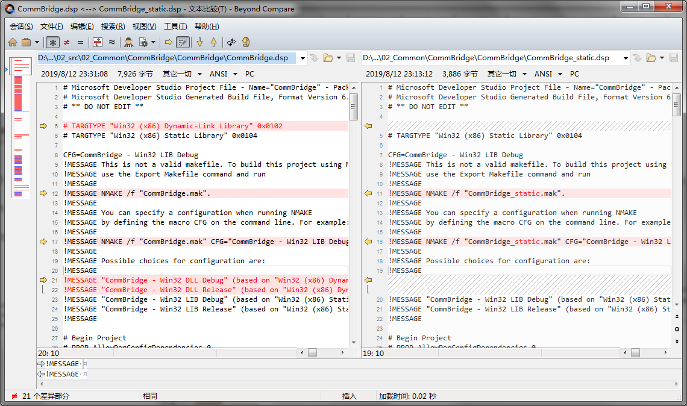

VC++项目中静态库和动态库配置共存
- 如果是VC6，则只能采用手工方式
为 VC6 程序 Release 版本增加调试信息的具体操作方式如下：
1、菜单 Build -> Configuration...，点击 Add 按钮，从 Release 版本复制一个编译选项，命名为“Release with debug info”，当然名称随意。
- 创建一个静态库项目，添加两个新配置：Win32 LIB Debug和Win32 LIB Release
- 创建一个动态库项目，添加两个新配置：Win32 DLL Debug和Win32 DLL Releas
- 使用Beyond Compare把二者的同名dsp文件按配置节点合并即可

- 得到以下工程配置模板，替换掉以下字符串并做修改即可
AAAAAAAA_BRIDGE_DRIVER_EXPORTS —> XXXX_BRIDGE_DRIVER_EXPORTS
aaaaaaaa_Bridge_Driver —> XXXX_Bridge_Driver
# Microsoft Developer Studio Project File - Name="aaaaaaaa_Bridge_Driver" - Package Owner=<4> # Microsoft Developer Studio Generated Build File, Format Version 6.00# ** DO NOT EDIT ** # TARGTYPE "Win32 (x86) Dynamic-Link Library" 0x0102 # TARGTYPE "Win32 (x86) Static Library" 0x0104 CFG=aaaaaaaa_Bridge_Driver - Win32 DLL Debug !MESSAGE This is not a valid makefile. To build this project using NMAKE, !MESSAGE use the Export Makefile command and run !MESSAGE !MESSAGE NMAKE /f "aaaaaaaa_Bridge_Driver.mak". !MESSAGE !MESSAGE You can specify a configuration when running NMAKE !MESSAGE by defining the macro CFG on the command line. For example: !MESSAGE !MESSAGE NMAKE /f "aaaaaaaa_Bridge_Driver.mak" CFG="aaaaaaaa_Bridge_Driver - Win32 DLL Debug" !MESSAGE !MESSAGE Possible choices for configuration are: !MESSAGE !MESSAGE "aaaaaaaa_Bridge_Driver - Win32 LIB Release" (based on "Win32 (x86) Static Library") !MESSAGE "aaaaaaaa_Bridge_Driver - Win32 LIB Debug" (based on "Win32 (x86) Static Library") !MESSAGE "aaaaaaaa_Bridge_Driver - Win32 DLL Release" (based on "Win32 (x86) Dynamic-Link Library") !MESSAGE "aaaaaaaa_Bridge_Driver - Win32 DLL Debug" (based on "Win32 (x86) Dynamic-Link Library") !MESSAGE # Begin Project # PROP AllowPerConfigDependencies 0 # PROP Scc_ProjName "" # PROP Scc_LocalPath "" !IF "$(CFG)" == "aaaaaaaa_Bridge_Driver - Win32 LIB Release" # PROP BASE Use_MFC 0 # PROP BASE Use_Debug_Libraries 0 # PROP BASE Output_Dir "Win32_LIB_Release" # PROP BASE Intermediate_Dir "Win32_LIB_Release" # PROP BASE Target_Dir "" # PROP Use_MFC 0 # PROP Use_Debug_Libraries 0 # PROP Output_Dir "Win32_LIB_Release" # PROP Intermediate_Dir "Win32_LIB_Release" # PROP Target_Dir "" MTL=midl.exe CPP=cl.exe # ADD BASE CPP /nologo /MD /W3 /GX /O2 /D "WIN32" /D "NDEBUG" /D "_MBCS" /D "_LIB" /Yu"stdafx.h" /FD /c # ADD CPP /nologo /MD /W3 /GX /O2 /D "WIN32" /D "NDEBUG" /D "_MBCS" /D "_LIB" /Yu"stdafx.h" /FD /c RSC=rc.exe # ADD BASE RSC /l 0x804 /d "NDEBUG" # ADD RSC /l 0x804 /d "NDEBUG" BSC32=bscmake.exe # ADD BASE BSC32 /nologo # ADD BSC32 /nologo LIB32=link.exe -lib # ADD BASE LIB32 /nologo # ADD LIB32 /nologo # Begin Special Build Tool SOURCE="$(InputPath)" PostBuild_Cmds=copy .\Win32_LIB_Release\aaaaaaaa_Bridge_Driver.lib ..\..\01_lib\aaaaaaaa_Bridge\aaaaaaaa_Bridge_Driver.lib copy .\aaaaaaaa_Bridge_Driver.h ..\..\01_lib\aaaaaaaa_Bridge\aaaaaaaa_Bridge_Driver.h # End Special Build Tool !ELSEIF "$(CFG)" == "aaaaaaaa_Bridge_Driver - Win32 LIB Debug" # PROP BASE Use_MFC 0 # PROP BASE Use_Debug_Libraries 1 # PROP BASE Output_Dir "Win32_LIB_Debug" # PROP BASE Intermediate_Dir "Win32_LIB_Debug" # PROP BASE Target_Dir "" # PROP Use_MFC 0 # PROP Use_Debug_Libraries 1 # PROP Output_Dir "Win32_LIB_Debug" # PROP Intermediate_Dir "Win32_LIB_Debug" # PROP Target_Dir "" MTL=midl.exe CPP=cl.exe # ADD BASE CPP /nologo /MDd /W3 /Gm /GX /ZI /Od /D "WIN32" /D "_DEBUG" /D "_MBCS" /D "_LIB" /Yu"stdafx.h" /FD /GZ /c # ADD CPP /nologo /MDd /W3 /Gm /GX /ZI /Od /D "WIN32" /D "_DEBUG" /D "_MBCS" /D "_LIB" /Yu"stdafx.h" /FD /GZ /c RSC=rc.exe # ADD BASE RSC /l 0x804 /d "_DEBUG" # ADD RSC /l 0x804 /d "_DEBUG" BSC32=bscmake.exe # ADD BASE BSC32 /nologo # ADD BSC32 /nologo LIB32=link.exe -lib # ADD BASE LIB32 /nologo # ADD LIB32 /nologo # Begin Special Build Tool SOURCE="$(InputPath)" PostBuild_Cmds=copy .\Win32_LIB_Debug\aaaaaaaa_Bridge_Driver.lib ..\..\01_lib\aaaaaaaa_Bridge\aaaaaaaa_Bridge_Driver.lib copy .\aaaaaaaa_Bridge_Driver.h ..\..\01_lib\aaaaaaaa_Bridge\aaaaaaaa_Bridge_Driver.h # End Special Build Tool !ELSEIF "$(CFG)" == "aaaaaaaa_Bridge_Driver - Win32 DLL Release" # PROP BASE Use_MFC 0 # PROP BASE Use_Debug_Libraries 0 # PROP BASE Output_Dir "Win32_DLL_Release" # PROP BASE Intermediate_Dir "Win32_DLL_Release" # PROP BASE Target_Dir "" # PROP Use_MFC 0 # PROP Use_Debug_Libraries 0 # PROP Output_Dir "Win32_DLL_Release" # PROP Intermediate_Dir "Win32_DLL_Release" # PROP Target_Dir "" CPP=cl.exe # ADD BASE CPP /nologo /MD /W3 /GX /O2 /D "WIN32" /D "NDEBUG" /D "_WINDOWS" /D "_MBCS" /D "_USRDLL" /D "AAAAAAAA_BRIDGE_DRIVER_EXPORTS" /Yu"stdafx.h" /FD /c # ADD CPP /nologo /MD /W3 /GX /O2 /D "WIN32" /D "NDEBUG" /D "_WINDOWS" /D "_MBCS" /D "_USRDLL" /D "AAAAAAAA_BRIDGE_DRIVER_EXPORTS" /Yu"stdafx.h" /FD /c MTL=midl.exe # ADD BASE MTL /nologo /D "NDEBUG" /mktyplib203 /win32 # ADD MTL /nologo /D "NDEBUG" /mktyplib203 /win32 RSC=rc.exe # ADD BASE RSC /l 0x804 /d "NDEBUG" # ADD RSC /l 0x804 /d "NDEBUG" BSC32=bscmake.exe # ADD BASE BSC32 /nologo # ADD BSC32 /nologo LINK32=link.exe # ADD BASE LINK32 kernel32.lib user32.lib gdi32.lib winspool.lib comdlg32.lib advapi32.lib shell32.lib ole32.lib oleaut32.lib uuid.lib odbc32.lib odbccp32.lib /nologo /dll /machine:I386 # ADD LINK32 kernel32.lib user32.lib gdi32.lib winspool.lib comdlg32.lib advapi32.lib shell32.lib ole32.lib oleaut32.lib uuid.lib odbc32.lib odbccp32.lib /nologo /dll /machine:I386 # Begin Special Build Tool SOURCE="$(InputPath)" PostBuild_Cmds=copy .\Win32_DLL_Release\aaaaaaaa_Bridge_Driver.lib ..\..\01_lib\aaaaaaaa_Bridge\aaaaaaaa_Bridge_Driver.lib copy .\Win32_DLL_Release\aaaaaaaa_Bridge_Driver.dll ..\..\01_lib\aaaaaaaa_Bridge\aaaaaaaa_Bridge_Driver.dll copy .\Win32_DLL_Release\aaaaaaaa_Bridge_Driver.dll ..\..\..\01_build\aaaaaaaa_Bridge\aaaaaaaa_Bridge_Driver.dll copy .\aaaaaaaa_Bridge_Driver.h ..\..\01_lib\aaaaaaaa_Bridge\aaaaaaaa_Bridge_Driver.h # End Special Build Tool !ELSEIF "$(CFG)" == "aaaaaaaa_Bridge_Driver - Win32 DLL Debug" # PROP BASE Use_MFC 0 # PROP BASE Use_Debug_Libraries 1 # PROP BASE Output_Dir "Win32_DLL_Debug" # PROP BASE Intermediate_Dir "Win32_DLL_Debug" # PROP BASE Target_Dir "" # PROP Use_MFC 0 # PROP Use_Debug_Libraries 1 # PROP Output_Dir "Win32_DLL_Debug" # PROP Intermediate_Dir "Win32_DLL_Debug" # PROP Ignore_Export_Lib 0 # PROP Target_Dir "" CPP=cl.exe # ADD BASE CPP /nologo /MDd /W3 /Gm /GX /ZI /Od /D "WIN32" /D "_DEBUG" /D "_WINDOWS" /D "_MBCS" /D "_USRDLL" /D "AAAAAAAA_BRIDGE_DRIVER_EXPORTS" /Yu"stdafx.h" /FD /GZ /c # ADD CPP /nologo /MDd /W3 /Gm /GX /ZI /Od /D "WIN32" /D "_DEBUG" /D "_WINDOWS" /D "_MBCS" /D "_USRDLL" /D "AAAAAAAA_BRIDGE_DRIVER_EXPORTS" /FR /Yu"stdafx.h" /FD /GZ /c MTL=midl.exe # ADD BASE MTL /nologo /D "_DEBUG" /mktyplib203 /win32 # ADD MTL /nologo /D "_DEBUG" /mktyplib203 /win32 RSC=rc.exe # ADD BASE RSC /l 0x804 /d "_DEBUG" # ADD RSC /l 0x804 /d "_DEBUG" BSC32=bscmake.exe # ADD BASE BSC32 /nologo # ADD BSC32 /nologo LINK32=link.exe # ADD BASE LINK32 kernel32.lib user32.lib gdi32.lib winspool.lib comdlg32.lib advapi32.lib shell32.lib ole32.lib oleaut32.lib uuid.lib odbc32.lib odbccp32.lib /nologo /dll /debug /machine:I386 /pdbtype:sept # ADD LINK32 kernel32.lib user32.lib gdi32.lib winspool.lib comdlg32.lib advapi32.lib shell32.lib ole32.lib oleaut32.lib uuid.lib odbc32.lib odbccp32.lib /nologo /dll /debug /machine:I386 /pdbtype:sept # Begin Special Build Tool SOURCE="$(InputPath)" PostBuild_Cmds=copy .\Win32_DLL_Debug\aaaaaaaa_Bridge_Driver.lib ..\..\01_lib\aaaaaaaa_Bridge\aaaaaaaa_Bridge_Driver.lib copy .\Win32_DLL_Debug\aaaaaaaa_Bridge_Driver.dll ..\..\01_lib\aaaaaaaa_Bridge\aaaaaaaa_Bridge_Driver.dll copy .\Win32_DLL_Debug\aaaaaaaa_Bridge_Driver.dll ..\..\..\01_build\aaaaaaaa_Bridge\aaaaaaaa_Bridge_Driver.dll copy .\aaaaaaaa_Bridge_Driver.h ..\..\01_lib\aaaaaaaa_Bridge\aaaaaaaa_Bridge_Driver.h # End Special Build Tool !ENDIF # Begin Target # Name "aaaaaaaa_Bridge_Driver - Win32 LIB Release" # Name "aaaaaaaa_Bridge_Driver - Win32 LIB Debug" # Name "aaaaaaaa_Bridge_Driver - Win32 DLL Release" # Name "aaaaaaaa_Bridge_Driver - Win32 DLL Debug" # Begin Group "Source Files" # PROP Default_Filter "cpp;c;cxx;rc;def;r;odl;idl;hpj;bat" # Begin Source File # .....此处使用原工程配置 # End Source File # End Group # Begin Group "Resource Files" # PROP Default_Filter "ico;cur;bmp;dlg;rc2;rct;bin;rgs;gif;jpg;jpeg;jpe" # Begin Source File SOURCE=.\ReceiptPrinter_Bridge_Driver.rc # End Source File # End Group # Begin Source File SOURCE=.\ReadMe.txt # End Source File # End Target # End Project
- 如果是VC7+，可以使用以下项目属性更换
In Properties -> General -> Configuration Type -> set this to Static Library or Dynamic Library for the libraries A and B you want to static or dynamic.
In Properties -> C/C++ -> Code Generation -> Runtime Library -> Every library which will be linked together must use the same run-time library, for example Multi-Threaded Debug DLL.
Thus you could do: A - Config Type: Static Library. Runtime Lib: Multi-threaded Debug DLL. (yes this is ok) B - Config Type: Dynamic Library. Runtime Lib: Multi-threaded Debug DLL
参见
Is it possible to mix static, multi-threaded, DLL libraries in one project?
参考zlib的zlib-1.2.5.3\zlib-1.2.5.3\old\visualc6\zlib.dsp